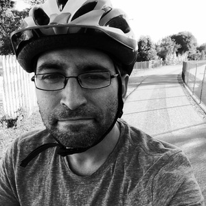

Shawn Medero

731 W. 12th StreetClaremont, CA 91711
United States
484-802-4687
shawn@medero.net
Homepage
Github
Objectives & Summary
I'm a passionate technical product management leader with 18 years of experience in building, designing, and launching software products. I work closely with executive decision-makers to take new ideas and ship the best product. I want to deeply understand the whys of the product, as well as the potential users, and then help translate those to a cross-functional team that thrives on a design-driven culture.
Work Experience
Office of Research Information Services (ORIS), University of Washington
ORIS builds research administration products and services that enables researchers to do more research by spending less time dealing with administrative overhead while making the university the best place in the world to do cutting-edge research.
Since 2011 I've sat on the executive leadership team and contribute to the development of our overall business, technical and partnering strategies. Together, we manage a department of 50+ employees.
-
Solutions Architect
– Present
- Senior architect for foundational and platform technology solutions
- Product manager for Research Portal initiative
- Ad-hoc analyst for identity and access management, security, user experience, and software solutions
- Mentor and coach for junior staff
Interim Program Management Lead
–
- Team lead for a four-member program management group responsible for strategic programs and major projects
Platform and User Experience Program Lead
–
- Team lead for a six-member user experience service team that I built from the ground-up
- Architect for application, identity and foundational solutions for our Researcher Portal initiatives
- Assigned as product manager for a stagnated portal product that needed clarity of vision and a development cadence to begin delivering value
Senior Computing Specialist
-
- Developer and architect for content management systems, web applications and web services.
SerialSolutions (Summon)
Summon is a web-scale discovery service for libraries that provides a comprehensive unified index and relevant, easily refined results of your library's collection. The Summon product was acquired by SerialSolutions.
Search Engineering Consultant
-
- Developer and designer for internal annotation software tools
- Developer and designer for internal search relevancy customization tools
- Developer for search relevancy quality assurance test suites
Meredith Corporation (Healia)
Healia was a web-scale search engine for consumers to discover relevant health content to help them easily research complex health topics and find peer discussion groups. Healia was acquired by the Meredith Corporation.
Senior Software Engineer
-
- Lead front-end developer and product designer for the Heaila search user interface
- Developer for search APIs
Linguistic Data Consortium (LDC), University of Pennsylvania
The Linguistic Data Consortium (LDC) is an open consortium of universities, libraries, corporations and government research laboratories. LDC creates and distributes a wide array of language resources that support sponsored research programs and language-based technology evaluations as well as providing resources and contributing organizational expertise.
Software Engineer
-
- Product designer and lead developer for the LDC News Search service
- Product designer and lead developer for the Modern-Standard Arabic & Nahuatl Reading Assessment Tool
- Developer for internal linguistic annotation user interfaces, text processing services, and workflow systems
Hay Group
Hay Group is a global management consulting firm specializes in providing data-driven people and technology solutions to transform organizations.
Senior Webmaster
-
- Product designer for main corporate web presence, regional country web presences, conference and special event websites
- Product designer and developer for employee assessment tools
- Developer for content management systems and web-based employee survey applications
- Systems administrator for web servers, firewalls, and load-balancers